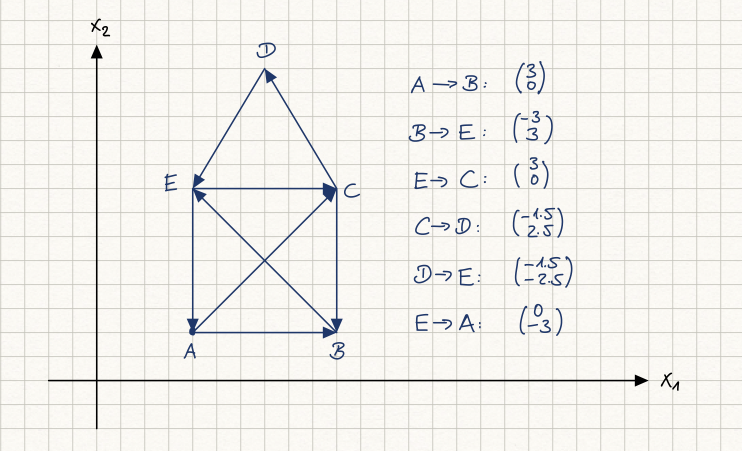
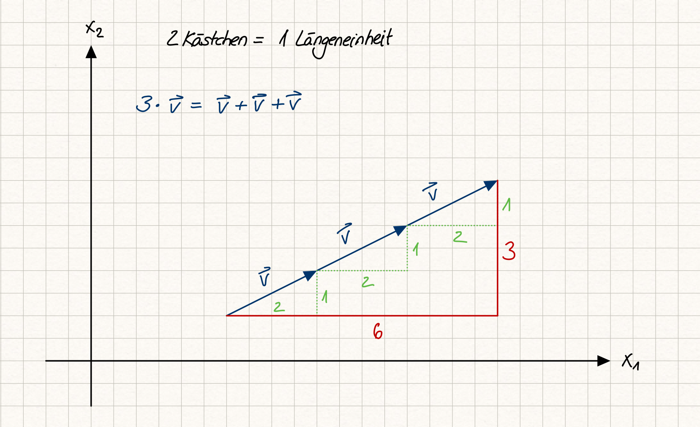

3.3 Vektoren in der Geometrie#
n-Tupel können in der Geometrie genutzt werden, um die Position von Punkten in einem Koordinatensystem zu beschreiben. Mit Hilfe von Vektoren können in der Geometrie Bewegungen dargestellt werden. n-Tupel zusammen mit Vektoren sind daher ein mächtiges Werkzeug, um geometrische Probleme zu beschreiben und zu lösen.
Lernziele#
Lernziele
Sie können die Vektoren des reellen Standardvektorraumes als Bewegungen bzw. Verschiebungen in der Geometrie interpretieren.
Sie können die Vektoraddition geometrisch als Hintereinanderausführung von Verschiebungen verstehen und anwenden.
Sie können die Skalarmultiplikation als Streckung oder Stauchung einer Verschiebung interpretieren. Multiplikation mit einem negativen Skalar führt zu einer Umorientierung.
Vektoren als Verschiebung interpretieren#
Wir betrachten zunächst den reellen Vektorraum \(\mathbb{R}^2\) und stellen ihn geometrisch als Ebene mit einem kartesischen Koordinatensystem dar. Zunächst wählen wir einen Punkt aus, der durch ein Zahlentupel beschrieben wird, z.B. \(A(2,1)\).


Fig. 6 Haus vom Nikolaus; Quelle: eigene Darstellung; Lizenz: CC BY-SA 4.0#
Um die Strecke von \(A\) nach \(B\) zu beschreiben, bewegen wir uns 3 Einheiten nach rechts (\(x_1\)-Richtung) und 0 Einheiten nach oben/unten (\(x_2\)-Richtung) und landen beim Punkt \(B\). Diese Bewegung kann als 2-Tupel notiert werden. Im Gegensatz zu Punkten können wir Verschiebungen jedoch als Vektoren des reellen Standardvektorraums interpretieren. Wir notieren für die Bewegung von \(A\) nach \(B\) den Spaltenvektor
und kürzen ihn mit dem Symbol \(\vec{v}_1\) ab, also
Der kleine Pfeil über dem \(v\) zeigt an, dass der Vektor \(\vec{v}\) geometrisch als Verschiebung interpretiert wird, ähnlich wie der Pfeil in der Skizze vom Punkt \(A\) zum Punkt \(B\). Manchmal werden alle Vektoren eines allgemeinen Vektorraumes mit einem Pfeil gekennzeichnet, auch ohne eine geometrische Interpretation. Häufiger wird jedoch der Fettdruck \(\mathbf{v}\) benutzt, um zu verdeutlichen, dass es sich um einen Vektor handelt.
Wir setzen unseren Weg fort. Von \(B\) zu \(E\) müssen wir 3 Einheiten nach links bzw. -3 Einheiten nach rechts (in \(x_1\)-Richtung) und 3 Einheiten nach oben (in \(x_2\)-Richtung) gehen. Dies notieren wir als die zweite Bewegung:
Wir laufen weiter den Weg ab. Von \(B\) zu \(E\) müssen wir 3 Einheiten nach links bzw. -3 Einheiten nach rechts (in \(x_1\)-Richtung) und 3 Einheiten nach oben (in \(x_2\)-Richtung), notieren also als zweite Verschiebung den Vektor
Um vom Punkt \(E\) zum Punkt \(C\) zu gelangen, bewegen wir uns wieder 3 Einheiten nach rechts und 0 Einheiten nach oben. Diese Verschiebung entspricht erneut dem Vektor
Zusammengefasst: Wenn wir Vektoren des reellen Standardvektorraums geometrisch als Verschiebung interpretieren, kann diese Verschiebung an einem beliebigen Punkt starten. Der Vektor \(\vec{v}_1 = \begin{pmatrix} 3 \ 0 \end{pmatrix}\) verschiebt sowohl den Punkt \(A\) auf \(B\) als auch den Punkt \(E\) auf \(C\). Soll der Vektor \(\vec{v}_1 = \begin{pmatrix} 3 \ 0 \end{pmatrix}\) in einem Koordinatensystem dargestellt werden, müssten unendlich viele Pfeile eingezeichnet werden, um alle möglichen Startpunkte abzudecken.
Verschiebungen addieren#
In den obigen Betrachtungen haben wir die geometrische Verschiebung von Punkten, also das Bewegen im Raum, schon als Vektor des reellen Standardvektorraumes bezeichnet. Das bedeutet, dass neben den n-Tupeln zwei wichtige Rechenoperationen hinzukommen: die Vektoraddition und die Skalarmultiplikation, die die Vektorraum-Eigenschaften erfüllen.
Warum sind diese Bewegungen bzw. Verschiebungen nun Vektoren und nicht nur Tupel? Es ist geometrisch sinnvoll, zwei Verschiebungen hintereinander auszuführen und die resultierende Verschiebung als eine einzige Gesamtverschiebung zu beschreiben. Wenn man in unserem Beispiel 3 Einheiten nach rechts und 0 Einheiten nach oben geht und dann -3 Einheiten nach rechts und 3 Einheiten nach oben, so ist man insgesamt 0 Einheiten nach rechts und 3 Einheiten nach oben gelaufen. Bewegungen bzw. geometrische Verschiebungen dürfen addiert werden, so wie die Vektoraddition im reellen Standardvektorraum definiert ist:
Betrachten wir das Gesamtergebnis einer Verschiebung, gibt es keinen Unterschied zwischen
und
Es gibt auch ein neutrales Element
dass geometrisch sinnvoll interpretiert werden kann. \(\vec{0}\) bedeutet, dass weder in \(x_1\)-Richtung noch in \(x_2\)-Richtung eine Verschiebung erfolgt. Wir bleiben dort stehen, wo wir sind.
Die Existenz des inversen Elements bedeutet, dass wir eine Verschiebung rückgängig machen können. Gehen wir \(a\) Einheiten nach rechts und \(b\) Einheiten nach oben, so bedeutet \(-a\) Einheiten nach rechts, dass wir \(a\) Einheiten nach links gehen. \(-b\) Einheiten nach oben bedeutet, dass wir \(b\) Einheiten nach unten gehen. Werden nun diese beiden Bewegungen oder Verschiebungen hintereinander ausgeführt, haben wir uns gar nicht bewegt.
Verschiebungen vervielfachen#
Auch die Skalarmultiplikation im reellen Vektorraum lässt sich geometrisch für Verschiebungen sinnvoll interpretieren. Nehmen wir an, wir haben eine Verschiebung
Das bedeutet, wir verschieben einen gegebenen Punkt um 2 Einheiten in \(x_1\)-Richtung und 1 Einheit in \(x_2\)-Richtung. Gemäß der Skalarmultiplikation des reellen Vektorraumes gilt:
Damit wird ein Punkt um 6 Einheiten in \(x_1\)-Richtung und 3 Einheiten in \(x_2\)-Richtung verschoben. Das entspricht unserem Verständnis, drei Verschiebungen in die gleiche Richtung hintereinander auszuführen.


Fig. 7 Skalarmultiplikation als Verschiebung geometrisch interpretiert; Quelle: eigene Darstellung; Lizenz: CC BY-SA 4.0#
Der Skalar muss jedoch nicht immer eine ganze Zahl wie in diesem Beispiel sein. Alle reellen Zahlen sind möglich. Allgemein können wir daher die Skalarmultiplikation als eine Streckung oder Stauchung der Verschiebung interpretieren. Wird eine Verschiebung mit einer negativen Zahl multipliziert, kehrt sich die Richtung bzw. die Orientierung der Verschiebung um. Zum Beispiel, wenn wir den Vektor
mit -1 multiplizieren, erhalten wir:
Diese Multiplikation führt zu einer Verschiebung in die entgegengesetzte Richtung, nämlich 2 Einheiten nach links und 1 Einheit nach unten.
Zusammenfassung und Ausblick#
Der reelle Standardvektorraum mit n-Tupeln, Vektoraddition und Skalarmultiplikation ist ein äußerst geeignetes Werkzeug, um Bewegungen bzw. Verschiebungen in der Geometrie zu beschreiben.
Im nächsten Kapitel werden wir uns mit affinen Punkträumen beschäftigen. Affine Punkträume erweitern unser Verständnis, indem sie es uns ermöglichen, die Konzepte von Punkten (Orten) und Verschiebungen (Bewegungen) zu verbinden. Dies wird uns helfen, komplexere geometrische Probleme zu lösen.